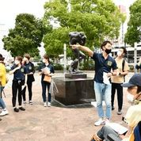
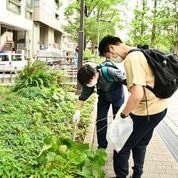
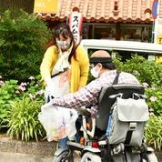
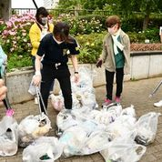

開催レポート！
こんにちは〜
真のごちゃまぜプロジェクトメンバーのはるこです(^^)/
この真のごちゃまぜプロジェクトの第２軸となる、
〜できることからやってみよう〜のコーナーで
プレテストとはなりますが”ゴミ拾い企画”を行いました！
今回は「真のごちゃまぜプロジェクト〜できることからやってみようvol.0〜ゴミ拾い編」のレポートをお届けします
「真のごちゃまぜプロジェクト〜できることからやってみようvol.0〜ゴミ拾い編」
▶︎活動日: 2021年5月29日(土)
▶︎活動場所: 横浜中区 大通り公園
▶︎参加者数: 30名ほど
▶︎タイムテーブル
10:00 集合（ロダン像前）
10:05~10:30 ゴミ拾い分別ルール学習＆レクリエーション（自己紹介等）
10:30~11:30 ゴミ拾い
11:30~11:40 ゴミをまとめる等の作業
11:40~12:00 レクリエーション、写真撮影
12:00 解散
✲✲✲✲✲✲✲✲✲✲✲✲✲✲✲✲✲✲✲✲✲✲✲✲✲✲✲✲
事前アンケート
今回、参加申し込みをする際に
”大通り公園に落ちているゴミTOP３は何か?”
といったアンケートを取らせていただきました！
みなさんが想像するものは同じようで、、
- タバコの吸い殻
- 空き缶
- ペットボトル、食品の袋(お菓子、パン、飴など)
中には、、忘れがたい思い出なども、、
（過去になんかあったんでしょうか..?）
ゴミ拾いスタート
分別の仕方は３種類！
- 燃えるゴミ
- 燃えないゴミ
- カン、ビン、ペットボトル

それでは、グループに別れてごみ拾いスタート！

パッと見はきれいだけど、、、
草むらの方をよく見てみると、、、！

まだ始まって〇〇分なのに
もうすでにこんなに！
ポイ捨てする際に、罪悪感が多少あるのか
わからないのですが、、、
みな人目につかない所に捨てていくみたいです
……..
1時間と短い時間でしたが、
こんなに多くのゴミを回収することが出来ました！
こんなにも、汚かったんですね😱

レクリエーション
終わったあとのレクリエーションで
- どんなゴミが多く落ちてたか
- 意外なゴミはあったか
- 本日の感想
〈落ちてたものランキング〉
- タバコの吸い殻
- プラスティック容器
- カン、ペットボトル（特にジョージアのコーヒーが多かったです）
意外なものとして、、
→片足の靴、銀行のカードなども！
〈感想〉
- ゴミはゴミでも自然に帰らないゴミが多い
- 大人や子供、車椅子の人で目線が変わってくるため、見えるものが違う！
今回のゴミ拾いでわかったことは
”ごちゃまぜだとできることが増える!!”
とても素晴らしい発見ができたと思います(^^)
最後に
最後に..
今回は5/29(土)にゴミ拾いイベントを開催しましたが、
な・ん・と！！
5/30(日)は”ゴミゼロの日”だったそうで、、
その日に多くの団体さんがゴミ拾い活動を行なっていました(-｡-;
まだまだ知らないことが多いですね、、。
今回出てきた課題を活かして
次回は”まるゴミJAPAN”としてもっと大人数で実施したいと思います！
皆様のご参加お持ちしております◎